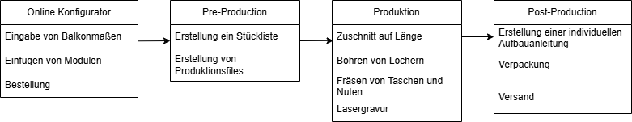

Fertigung – Prozessbeschreibung
Die Fertigung der individuellen Balkonmöbel erfolgt in mehreren automatisierten Schritten.
Ziel ist es, aus der Bestellung eine exakte Produktionsliste abzuleiten, die direkt als Input für die Maschinen dient.
Prozesskette
Die wesentlichen Prozessschritte sind:
- Bestellung & Konfiguration
- Kund:in gibt Balkonmaße und Möbelwünsche online ein.
-
Automatische Generierung der Stück- und Produktionsliste.
-
Materialbereitstellung
-
Auswahl und Bereitstellung von Holzlatten und Vierkanthölzern.
-
Zuschnitt
- Sägen der Bretter und Vierkanthölzern auf exakte Länge.
-
Optimierung des Verschnitts (Materialeffizienz).
-
Bearbeitung
- Bohren von Löchern für Schraubverbindungen.
- Fräsen von Taschen und Nuten.
-
Lasergravuren (z. B. Logo, Markierungen, Zusammenbauhinweise bei nicht sichtbaren Teilen).
-
Qualitätskontrolle
- Prüfung der Maßhaltigkeit und Vollständigkeit.
-
Automatische Kennzeichnung oder Sortierung fehlerhafter Teile.
-
Verpackung & Versand
- Zuordnung der Bretter zur jeweiligen Bestellung.
- Verpackung und Etikettierung.
- Versandbereitstellung.
Visualisierung der Prozesskette

Fragestellung: Eigene Maschine oder Standardlösung?
Ein zentrales Thema ist die Frage, ob für diese Fertigungsschritte eine eigene Fertigungsmaschine entwickelt werden muss,
oder ob sich bestehende Lösungen am Markt einsetzen bzw. kombinieren lassen.
Mögliche Optionen:
- Standardmaschinen: CNC-Fräsen, Plattensägen, Bohrzentren, Lasermaschinen.
- Kombinierte Bearbeitungszentren: Multifunktionale Maschinen für Zuschnitt, Bohren, Fräsen und Gravieren.
- Eigenentwicklung: Maßgeschneiderte Maschine speziell für die Anforderungen der Balkonmöbelproduktion.
Nächster Schritt: Maschinenvergleich
Im Dokument Maschinenvergleich sollen verschiedene Maschinen am Markt aufgelistet und gegenübergestellt werden.
Dazu wird eine Tabelle erstellt, die Funktionen, Kosten, Automatisierungsgrad und Integrationsmöglichkeiten vergleicht.